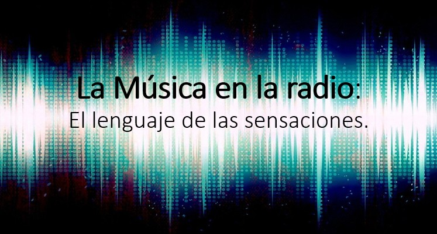

La música que se escuchan en una radio es parte de su identidad. Existen distintos tipos de elementos sonoros utilizados en la radio.
La Sintonía
- Es un fragmento musical (15 y 30 segundos) , cuya función es identificar a dicho programa.
- Aparece siempre al inicio y al final de un programa radiofónico.
- La sintonía despierta en el oyente unas expectativas (contenido, ritmo, etc.) sobre el tipo de emisión a la que acompaña.
- Sobre la sintonía puede aparecer una voz o mensaje que nos informa acerca de algunas características del programa. Un ejemplo: “Bienvenidos a FrayLuis Radio”.
- A este mensaje se le denomina “jingle”.
- Debe ser una composición musical de calidad.

Otros fragmentos y términos musicales en la radio
- Cuñas: Formatos cortos con mensaje educativo, comercial…
- Cortinillas: Fragmento musical de 10-15 segundos utilizado para separar contenidos en un mismo programa.
- Golpe musical: Fragmento corto de 2-3 segundos utilizado para llamar la atención del oyente.
- Ráfaga: Corte especial de unos 5 segundos que separa contenidos dentro de un mismo programa utilizado para dinamizarlo.
- Radio colchón musical: hilo musical de fondo utilizado en algunas locuciones.
- Pausa: Silencios cortos con objetivo rítmico, narrativo, expresivo, descriptivo…
- Fundido: Un sonido desparece gradualmente por otro.
- Paisaje sonoro: Sonidos organizados narrativamente que generan en el oyente sensaciones y percepciones de un determinado espacio.
Música libre de derechos de autor
- http://recursostic.educacion.es/bancoimagenes/web/
- https://bedroomproducersblog.com
- https://hainbach.bandcamp.com/album/isolation-loops-soundpack
- http://www.flashkit.com/soundfx/
- https://www.pacdv.com/sounds/index.html
- http://soundbible.com
- http://www.grsites.com/archive/sounds/
- http://99sounds.org
- https://freesound.org
- https://www.noiseforfun.com